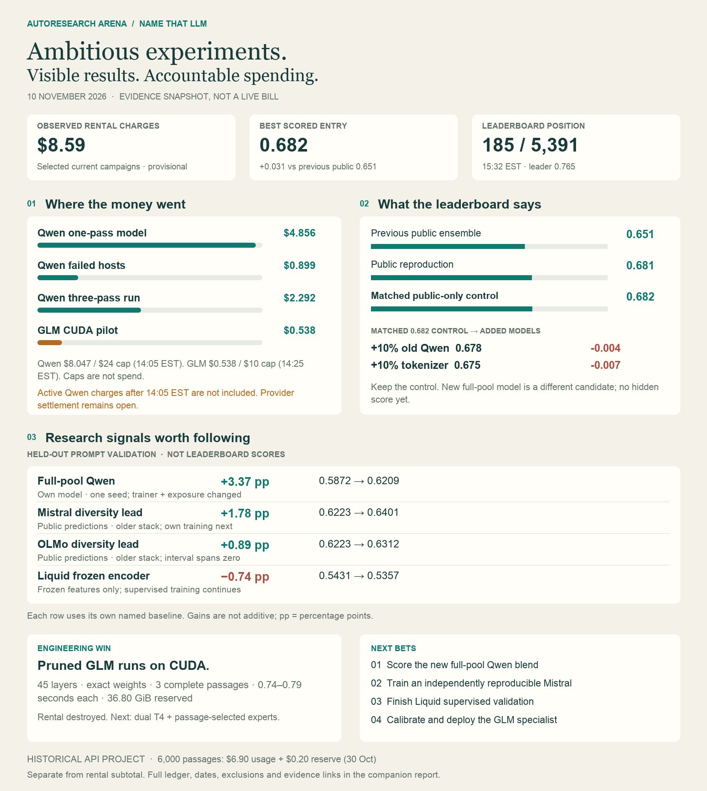

validation
+3.37 ppFull-pool Qwen
Standalone: five prompt folds, one seed. Trainer and exposure changed together.
Own baseline: 0.587169 → 0.620882
Evidence ↗Published 2026-11-10T20:57:09.951472+00:00. Evidence dates below are retained; publication does not imply refreshed billing or scores.
10 November 2026 · Snapshot prepared 2026-11-10T20:37:54.099322+00:00. Read the individual as-of times below: this report is not a live billing feed.
Provisional invoice rows · not all-time spending
+0.031 vs previous 0.651 public ensemble
15:32 EST snapshot · leader 0.765
| Campaign component | Observed USD | As of 10 Nov | Billing / lifecycle | Source |
|---|---|---|---|---|
| Qwen one-pass model | $4.856 | 14:05 EST | Completed; provisional invoice rows | Evidence ↗ |
| Qwen failed hosts | $0.899 | 14:05 EST | Two failures included, not added again | Evidence ↗ |
| Qwen three-pass run | $2.292 | 14:05 EST | Accumulating; unbilled remainder unknown | Evidence ↗ |
| GLM CUDA pilot | $0.538 | 14:25 EST | Four attempts; rentals destroyed; provisional | Evidence ↗ |
Qwen campaign $8.047 / $24 separate ceiling. GLM pilot $0.538 / $10 separate ceiling.
Active Qwen charges after 14:05 EST are not included. Provider settlement remains open.
Failed hosts are already included. The historical $5.749 Qwen summary is not added again; refreshed rows show $4.856 for the completed one-pass instance plus $0.899 failed hosts.
6,000 generated passages, completed 30 October: $6.9033 returned usage + $0.1963 unknown-charge reserve, under a separate $18 ceiling. Evidence ↗
Separate historical API project; not included in the rental subtotal. Earlier pilot, local electricity, subscriptions, free Kaggle quota and other older rentals are not reconciled here.
All scores are balanced accuracy; higher is better. Ranked snapshot: 15:32 EST / 20:32 UTC.
Public-only: 0.682
+10% earlier Qwen: 0.678 (-0.004)
+10% tokenizer: 0.675 (-0.007)
Token + byte entry pending at last receipt. Public 0.683 control and new full-pool blend passed visible offline T4 execution; neither has our hidden score.
Matched score receipts ↗Validation gains use different named baselines. Engineering throughput and training progress are not accuracy results.
Standalone: five prompt folds, one seed. Trainer and exposure changed together.
Own baseline: 0.587169 → 0.620882
Evidence ↗Older full-stack reference, cross-fitted blend weight; author-supplied predictions, not fully nested. Own full training staged.
Own baseline: 0.622322 → 0.640127
Evidence ↗Same older reference; author-supplied predictions and cross-fitted weight. Interval crosses zero; own weights not reproduced.
Own baseline: 0.622322 → 0.631228
Evidence ↗5% blend on old public reference; exact checkpoint and all 2,699 rows. Full-backbone training is a separate experiment.
Own baseline: 0.543060 → 0.535650
Evidence ↗45 layers, 62 exact shard hashes. Three passages at 0.743–0.794 seconds; 36.80 GiB peak reserved. First eight experts, not calibrated. No classifier accuracy yet.
Evidence ↗Latest committed queue snapshot: step 9,000. Newer recovery file received 15:10 EST; its step is not asserted here. No completed validation score.
Evidence ↗15:24 EST queue receipt: one held-out pilot plus sequential five-fold / three-seed continuation. No completed fold evaluation in inspected output. CPU; no incremental rental.
Evidence ↗